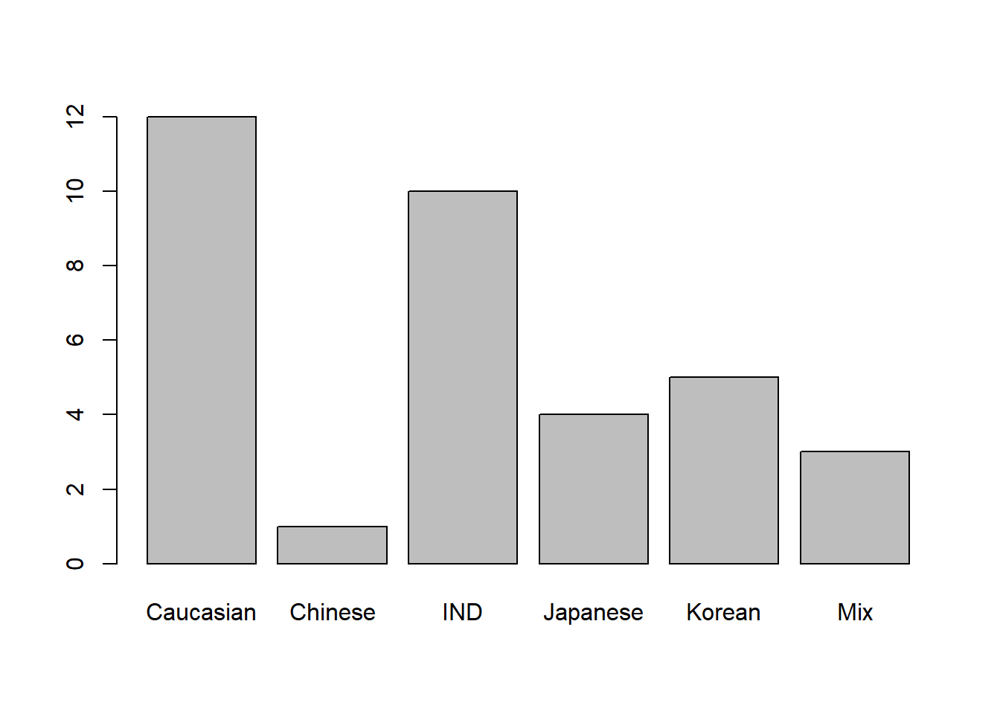
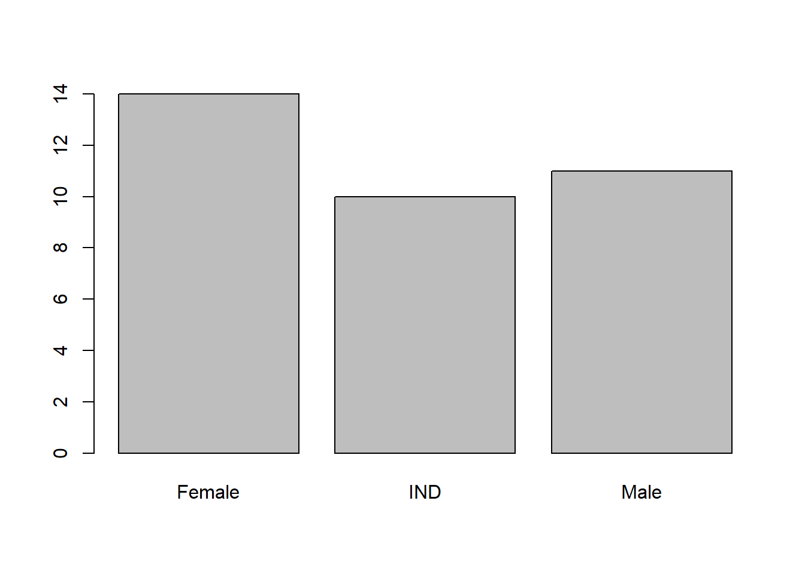

require(geomorph) #for GM analysis
require(SlicerMorphR) #for importing Slicer data
require(plyr) #for wireframe specs
require(dplyr) #for data processing/cleaning
require(tidyr) #for data processing/cleaning
require(skimr) #for nice visualization of data
require(knitr) #for qmd building
require(magrittr) Data Processing
Workflow
Data Processing in R Workflow
Purpose and Design
This page is a short overview of the SlicerMorph data and a walkthrough of how it was prepared for detailed analysis in r. It illustrates the processes of importing data, merging it with demographic qualifiers, and organizing it into an array that can be read and manipulated with the geomorph package.
This markdown file utilizes codechunks
Load needed packages
Attaching package: 'rlang'The following object is masked from 'package:magrittr':
set_namesThe following objects are masked from 'package:jsonlite':
flatten, unboxImporting Data
The process for imported Slicer Data into a workable format in R was followed from the SlicerMorph/Tutorials page at https://github.com/SlicerMorph/Tutorials/blob/main/GPA_3/parser_and_sample_R_analysis.md. The instructions provided by this page were followed closely and adjusted if/when they did not provide the needed results.
The primary file needed from the slicer export is the analysis.json file. This contains all of the objects generated by SlicerMorph’s GPA Module. These objects are parsed by parser2() and stored in the SM.json list as individual objects.
SM.json.file = "Data/Analysis_6-9-26/analysis.json"
SMlog <- parser2(SM.json.file)
# Once you import the .json file be sure to pipe into a simple identifing name. I'm using SMlog.
# Preview the file with the following command
head(SMlog)$input.path
[1] "F:/Dissertation Data/JABSOM/Coords"
$output.path
[1] "C:/Users/danny/Documents/git/Research_Methods/Data/Analysis_6-9-26/2026-06-12_08_31_05"
$files
[1] "JAB_LM_1170.fcsv" "JAB_LM_1353.fcsv" "JAB_LM_1575.fcsv" "JAB_LM_1601.fcsv"
[5] "JAB_LM_1882.fcsv" "JAB_LM_1892.fcsv" "JAB_LM_1900.fcsv" "JAB_LM_1941.fcsv"
[9] "JAB_LM_1973.fcsv" "JAB_LM_2270.fcsv" "JAB_LM_2274.fcsv" "JAB_LM_2294.fcsv"
[13] "JAB_LM_2303.fcsv" "JAB_LM_2317.fcsv" "JAB_LM_2343.fcsv" "JAB_LM_2368.fcsv"
[17] "JAB_LM_2380.fcsv" "JAB_LM_2431.fcsv" "JAB_LM_2433.fcsv" "JAB_LM_2458.fcsv"
[21] "JAB_LM_2463.fcsv" "JAB_LM_2467.fcsv" "JAB_LM_2487.fcsv" "JAB_LM_2508.fcsv"
[25] "JAB_LM_2569.fcsv" "JAB_LM_2625.fcsv" "JAB_LM_2652.fcsv" "JAB_LM_2681.fcsv"
[29] "JAB_LM_2687.fcsv" "JAB_LM_2697.fcsv" "JAB_LM_2699.fcsv" "JAB_LM_2700.fcsv"
[33] "JAB_LM_2701.fcsv" "JAB_LM_2727.fcsv" "JAB_LM_879.fcsv"
$format
[1] ".fcsv"
$no.LM
[1] 40
$skipped
[1] FALSE# Be sure to save the log file in an appropriate folder for easy access. I created a couple of nested folders to pipe my data into
save_data_location<-"Data/Processed_data/Analysis1/SMlog.rds"
saveRDS(SMlog, file=save_data_location)From here, parse out the needed files from your analysis. You will need the OutputData and the pcScores for the following analysis
SM_output <- read.csv(file=paste(SMlog$output.path,
SMlog$OutputData,
sep = "/"))
save_data_location<-"Data/Processed_data/Analysis1/SM_output.rds"
saveRDS(SM_output, file=save_data_location)
SlicerMorph_PCs <- read.table(file = paste(SMlog$output.path,
SMlog$pcScores,
sep="/"),
sep=",", header = TRUE, row.names=1)
save_data_location<-"Data/Processed_data/Analysis1/SlicerMorph_PCs.rds"
saveRDS(SlicerMorph_PCs, file=save_data_location)
PD <- SM_output[,2]
if (!SMlog$skipped) {
no.LM <- SMlog$no.LM
} else {
no.LM <- SMlog$no.LM - length(SMlog$skipped.LM)
}
save_data_location<-"Data/Processed_data/Analysis1/PD.rds"
saveRDS(PD, file=save_data_location)Merging Demographic data with Landmark data
Finally, I will want to correlate these files with the demographic data that I collected for each specimen. For this I need to import the excel file that I generated to collect this data.
- Be sure to check the file type. I was sure to save my excel file as a .csv
The SlicerMorph GPA module worked well to identify Procrustes Distances and develop PCAs but was not able to show where the sample variation came from. To highlight the significance of these results I developed an Excel spreadsheet with data on each individual’s Age, Sex, and Ancestry. This data then needed to be imported into r and merged with the SM.output landmark data.
# I'm changing the pipe notation in this code. Where |> exists, it was once %>%
dem<-read.csv(paste("Data/dem2.csv", sep=""))
dem X.Sample_name. Sex Age Ancestry
1 JAB_LM_766 Female 90-99 Caucasian
2 JAB_LM_879 IND IND IND
3 JAB_LM_1170 IND IND IND
4 JAB_LM_1353 IND IND IND
5 JAB_LM_1393 Male 50-59 Caucasian
6 JAB_LM_1575 Male 60-69 Mix
7 JAB_LM_1601 Female 70-79 Caucasian
8 JAB_LM_1882 IND IND IND
9 JAB_LM_1892 IND IND IND
10 JAB_LM_1900 IND IND IND
11 JAB_LM_1941 Female 100-109 Japanese
12 JAB_LM_1973 Male 90-99 Korean
13 JAB_LM_2270 Male 70-79 Mix
14 JAB_LM_2274 Female 80-89 Mix
15 JAB_LM_2294 Female 80-89 Korean
16 JAB_LM_2303 Male 70-79 Caucasian
17 JAB_LM_2317 Male 60-69 Caucasian
18 JAB_LM_2343 Female 90-99 Japanese
19 JAB_LM_2368 IND IND IND
20 JAB_LM_2380 Male 90-99 Caucasian
21 JAB_LM_2431 Female 90-99 Japanese
22 JAB_LM_2433 IND IND IND
23 JAB_LM_2458 Male 80-89 Caucasian
24 JAB_LM_2463 IND IND IND
25 JAB_LM_2467 IND IND IND
26 JAB_LM_2487 Male 80-89 Caucasian
27 JAB_LM_2508 Male 70-79 Caucasian
28 JAB_LM_2569 Male 70-79 Caucasian
29 JAB_LM_2625 Female 80-89 Korean
30 JAB_LM_2652 Female 70-79 Caucasian
31 JAB_LM_2681 Female 90-99 Caucasian
32 JAB_LM_2687 Female 100-109 Japanese
33 JAB_LM_2697 Female 70-79 Chinese
34 JAB_LM_2699 Female 80-89 Caucasian
35 JAB_LM_2700 Female 60-69 Korean
36 JAB_LM_2701 Female 80-89 Korean
37 JAB_LM_2727 Male 80-89 CaucasianData Summary
I do a couple of things here to make sense of the data I just imported into r. The first thing I want to see is an overview of my demographic distribution.
You can see a handfull of IND designations here. This is not because the information is unavailable or otherwise difficult to obtain, I just didn’t take note of it for all specimens because it is not entirely relevant to my specific research.
I can thereafter configure and plot my data with the following code:
dat <- merge(SM_output, dem, by.x = "Sample_name", by.y = "X.Sample_name.")
dat$Sample_name <- as.factor(dat$Sample_name)
dat$Sex <- as.factor(dat$Sex)
dat$Age <- as.factor(dat$Age)
dat$Ancestry <- as.factor(dat$Ancestry)
plot(dat$Ancestry)
plot(dat$Sex)
Data Matrix
In addition to a summary of demographic data, we can take a quick look at our fully merged data matrix. This matrix includes all of the landmark files, the demographic data, and the analytic data (procrustes distances and centroids). Since I don’t need to see the entire matrix (this would take up a lot of space on this page), I will limit the summary to just the first 6 rows.
The following tables thus illustrate the first 6 rows of the merged data. The three tables displayed here include:
- Data Summary
- Variable type: factor
- Variable type: numeric
This table depicts an overview of what type of data is stored and how many unique components there are. For this analysis there are shown to be 35 rows and 6 columns. 4 of the rows are classified as factors while the remain 2 are classified as numeric values.
d1 <- dat |> relocate(where(is.factor), .before = proc_dist)
skim(d1[1:6], )| Name | d1[1:6] |
| Number of rows | 35 |
| Number of columns | 6 |
| _______________________ | |
| Column type frequency: | |
| factor | 4 |
| numeric | 2 |
| ________________________ | |
| Group variables | None |
Variable type: factor
| skim_variable | n_missing | complete_rate | ordered | n_unique | top_counts |
|---|---|---|---|---|---|
| Sample_name | 0 | 1 | FALSE | 35 | JAB: 1, JAB: 1, JAB: 1, JAB: 1 |
| Sex | 0 | 1 | FALSE | 3 | Fem: 14, Mal: 11, IND: 10 |
| Age | 0 | 1 | FALSE | 6 | IND: 10, 80-: 8, 70-: 7, 90-: 5 |
| Ancestry | 0 | 1 | FALSE | 6 | Cau: 12, IND: 10, Kor: 5, Jap: 4 |
Variable type: numeric
| skim_variable | n_missing | complete_rate | mean | sd | p0 | p25 | p50 | p75 | p100 | hist |
|---|---|---|---|---|---|---|---|---|---|---|
| proc_dist | 0 | 1 | 0.03 | 0.01 | 0.02 | 0.03 | 0.03 | 0.04 | 0.05 | ▃▇▇▇▂ |
| centroid | 0 | 1 | 0.46 | 0.01 | 0.44 | 0.45 | 0.46 | 0.47 | 0.49 | ▅▃▇▂▂ |
save_data_location<-"Data/Processed_data/Analysis1/output.rds"
saveRDS(d1, file=save_data_location)Build array from Slicer data
To work with coordinate data in r, geomorph requires that the information be formatted into an array by using arrayspecs.
Coords <- arrayspecs(SM_output[,-c(1:3)],
p=no.LM,
k=3)
# Be sure to appropriatly lable the x, y, and z axes
dimnames(Coords) <- list(1:no.LM,
c("x","y","z"),
SMlog$Sample_name)
save_data_location<-"Data/Processed_data/Analysis1/Coords.rds"
saveRDS(Coords, file=save_data_location)d1array.gpa <- gpagen(Coords, print.progress=FALSE)
save_data_location<-"Data/Processed_data/Analysis1/gpa.rds"
saveRDS(d1array.gpa, file=save_data_location)
summary(d1array.gpa)
Call:
gpagen(A = Coords, print.progress = FALSE)
Generalized Procrustes Analysis
with Partial Procrustes Superimposition
40 fixed landmarks
0 semilandmarks (sliders)
3-dimensional landmarks
2 GPA iterations to converge
Consensus (mean) Configuration
X Y Z
1 0.10491691 0.0239239579 -0.042098611
2 0.10437525 -0.0282772637 -0.041227533
3 -0.07961861 0.0012584229 -0.064475234
4 -0.05478333 0.0056221736 0.235294446
5 0.06788461 0.1047870043 0.016844836
6 0.06281755 -0.1070665166 0.018355003
7 0.04676075 0.0648669575 -0.085972888
8 0.04436213 -0.0671933817 -0.085923345
9 -0.09612065 0.1548129434 0.065910039
10 -0.12398891 -0.1515655288 0.067500904
11 -0.11943686 0.0373640392 -0.075686251
12 -0.12137010 -0.0339847279 -0.073973831
13 0.07302276 0.1046139059 0.040325744
14 0.06802584 -0.1065383552 0.041820167
15 0.06926736 0.1111650595 0.046196948
16 0.06371097 -0.1129759716 0.047988352
17 0.07171002 0.1016035207 0.075551146
18 0.06551060 -0.1039052268 0.077189782
19 0.11189498 -0.0005419773 0.074720569
20 0.04225309 0.1197480635 -0.003453520
21 0.03651389 -0.1211977584 -0.001388569
22 -0.26829396 0.0076103117 0.111516469
23 0.09176139 0.0549829221 -0.007925597
24 0.08948895 -0.0616069201 -0.008226084
25 0.09387841 0.0713360934 0.065089996
26 0.08962533 -0.0766891074 0.065516772
27 -0.10165091 0.1210631389 -0.080960296
28 -0.10690942 -0.1195529384 -0.078798895
29 0.10655531 0.0115371324 -0.060093708
30 0.10579069 -0.0166679136 -0.059228578
31 0.10816847 -0.0006305338 0.052663477
32 -0.27843471 0.0072104023 0.030331903
33 -0.16151395 0.0023698136 -0.078110818
34 -0.25000523 0.0065364540 -0.040716078
35 -0.07922652 0.1231197612 -0.021095075
36 -0.08417752 -0.1212394565 -0.018312135
37 0.12397643 -0.0030279302 -0.096655701
38 0.11781787 -0.0025738408 -0.071892941
39 -0.01031155 0.1396717925 -0.018998564
40 -0.02424733 -0.1399685215 -0.017602301Mshape.Coords<-mshape(Coords)To visualize the coordinate data (see below) I took the mean shape from the landmarks and plotted them to build a wire fram using d1Links <- define.links(Mshape.Coords, ptsize = 7, links = NULL). This is the code needed to initiate the construction of a wireframe. This code is not saved in my data_processing.r script. If in the code script, the analysis will pause and wait for the construction of a new wireframe each time it is run. Instead I ran the code once and saved the resulting data as a spreadsheet d1Links.csv. This file can be found in the Data folder.
This functionality has since become obsolete. Geomorph dropped the define.links function due to compatability problems in the 3D viewer. This aspect of my workflow is not important. I used it because I like the visualization. I can maybe come back to it in the future (there is a way to manually do it) but for now it is not important.


Wireframe from Coordinates